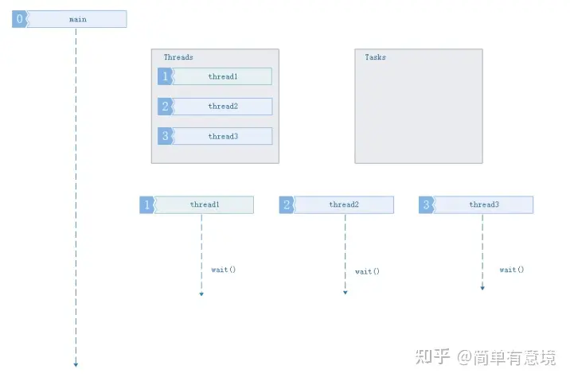
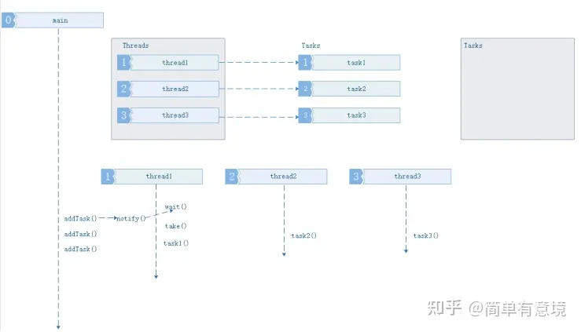
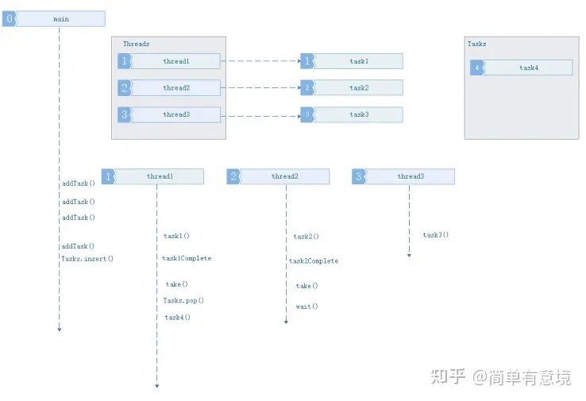
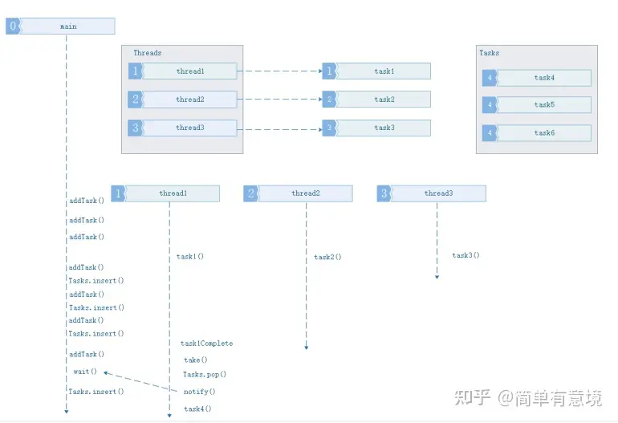

2024-08-26
池化思想与C++线程池
\n
醍醐灌顶全方位击破C++线程池及异步处理 - 知乎 (zhihu.com)
\n\n\n\n
\n\n\n\n
基本概念
\n\n\n\n
池化思想，又称为资源池化，是一种在计算机科学和系统工程中广泛应用的设计理念。其核心思想是将资源统一管理和分配 ，以提高资源的使用效率，降低资源消耗，并增强系统的稳定性和响应速度。
\n\n\n\n
池化思想通过将资源（如内存、数据库连接、线程等）预先分配并存储在一个资源池中，当系统需要这些资源时，直接从池中获取，而不是每次需要时都重新创建。这种机制不仅可以减少资源的创建和销毁开销，还能避免资源竞争和过度消耗。
\n\n\n\n
资源池（Resource Pooling）：
\n\n\n\n
\n
- 池化思想的核心概念是资源池，它是一组可重复使用 的资源，如数据库连接、线程、对象实例、网络连接等。 \n\n\n\n
- 资源池中的资源可以被多个任务或线程共享，并且可以通过请求和释放的方式来管理。 \n \n\n\n\n
例子 - 为何要用池？
\n\n\n\n
先举一个简单的使用篮球 例子，我们有多种策略使用篮球，并且使用篮球之后会产生一定的代价，主观上认为我们倾向于将代价最小化。
\n\n\n\n
策略1：（一次性使用）
\n\n\n\n
这是一种比较笨的策略，每次都买一个新的篮球用于使用，使用之后丢掉。于是我们可以得到如下代价公式：
\n\n\n\n
总代价=（买篮球代价+用篮球代价）∗使用次数
\n\n\n\n
策略2：（重复使用）
\n\n\n\n
在该策略中，认为篮球是可以多次使用的。于是我们可以得到如下公式：：
\n\n\n\n
总代价=买篮球代价∗篮球个数+重复代价∗使用次数+用篮球代价∗使用次数
\n\n\n\n
策略的选择
\n\n\n\n
上面列举了两种策略，事实上还有很多其他的策略。
两种策略本身是没有绝对的好坏的，而是视场景而定的。但就现实情况而言（比如，使用次数很多），篮球这个例子中符合如下的规律：
\n\n\n\n
买篮球的代价∗篮球个数+复用的代价∗使用次数<买篮球的代价∗使用次数
\n\n\n\n
这意味着，复用的总代价 小于 不复用的代价，即复用的策略更适合篮球这个例子 。
\n\n\n\n
线程池的组成
\n\n\n\n
\n
- 线程池管理器：初始化和创建线程，启动和停止线程，调配任务；管理线程池 \n\n\n\n
- 工作线程：线程池中等待并执行分配的任务 \n\n\n\n
- 任务接口：添加任务的接口，以提供工作线程调度任务的执行。 \n\n\n\n
- 任务队列：用于存放没有处理的任务，提供一种缓冲机制，同时具有调度功能，高优先级的任务放在队列前面 \n \n\n\n\n
对象池的优势
\n\n\n\n
\n
通过对象创建的例子，可看出对象创建是一个复杂的过程，少数的对象的创建并不会影响程序的太多的性能，但是如果达到了数以万计，就应该考虑复用同类对象的分配了。
【通俗理解】只是替换某个已存在对象的状态（填充原对象结构中的变量），复用已存在对象分配的内存 （节省了寻找空闲堆区等方面的时间）。\n\n\n\n
（相当于给内存重新换了身衣服 ）
这里认为，重新创建对象的代价 远远大于 更换已存在对象中相关的状态变量 。\n
\n\n\n\n
线程池工作的四种情况
\n\n\n\n
1.3.1 没有任务要执行，缓冲队列为空
\n\n\n\n

\n\n\n\n1.3.2 队列中任务数量，小于等于线程池中线程任务数量
\n\n\n\n

\n\n\n\n1.3.3 任务数量大于线程池数量,缓冲队列未满
\n\n\n\n

\n\n\n\n1.3.4 任务数量大于线程池数量，缓冲队列已满
\n\n\n\n

\n\n\n\n\n
Thread Safe Queue Requirement
\n
\n\n\n\n
\n
- How many producer are there for this queue? How many threads will be “ pushing to it”? \n\n\n\n
- Will there be many threads “ popping ” from the queue? \n\n\n\n
- Do we always need the “pop” operation to return something? Can it block a thread? \n\n\n\n
- Does the queue need to be atomic- no mutex locking allowed? \n \n\n\n\n
Simple C++ Implementation for Thread Safe Queue
\n\n\n\n
#include <queue>\n#include <condition_variable>\n#include <mutex>\n\ntemplate <typename T>\nclass Queue_Safe {\nprivate:\n std::queue<T> q; // Underlying queue to store elements\n std::condition_variable cv; // Condition variable for synchronization\n std::mutex mtx; // Mutex for exclusive access to the queue\n\npublic:\n // Pushes an element onto the queue\n void push(T const& val) {\n std::lock_guard<std::mutex> lock(mtx); \n q.push(val); \n cv.notify_one(); // Notify one waiting thread that data is available\n }\n\n // Pops and returns the front element of the queue\n T pop() {\n std::unique_lock<std::mutex> uLock(mtx); \n cv.wait(uLock, [&] { return !q.empty(); }); // Wait until the queue is not empty\n T front = q.front(); \n q.pop(); \n return front; \n } \n};
\n\n\n\n
We can pass arguments to the start-function when creating a new thread via std::thread(startFunction, args). Those arguments are passed by value from the thread creator function because the std::thread constructor copies or moves the creator's arguments before passing them to the start-function.
\n\n\n\n
最简单的线程池的实现（基于c++11)
\n\n\n\n
#ifndef THREAD_POOL_H\n#define THREAD_POOL_H\n\n#include <vector>\n#include <queue>\n#include <memory>\n#include <thread>\n#include <mutex>\n#include <condition_variable>\n#include <future>\n#include <functional>\n#include <stdexcept>\n\nclass ThreadPool {\npublic:\n ThreadPool(size_t);\n template<class F, class... Args>\n auto enqueue(F&& f, Args&&... args) \n -> std::future<typename std::result_of<F(Args...)>::type>;\n ~ThreadPool();\nprivate:\n // need to keep track of threads so we can join them\n std::vector< std::thread > workers;\n // the task queue\n std::queue< std::function<void()> > tasks;\n \n // synchronization\n std::mutex queue_mutex;\n std::condition_variable condition;\n bool stop;\n};\n \n// the constructor just launches some amount of workers\ninline ThreadPool::ThreadPool(size_t threads)\n : stop(false)\n{\n for(size_t i = 0;i<threads;++i)\n workers.emplace_back(\n [this]\n {\n for(;;)\n {\n std::function<void()> task;\n\n {\n std::unique_lock<std::mutex> lock(this->queue_mutex);\n this->condition.wait(lock,\n [this]{ return this->stop || !this->tasks.empty(); });\n if(this->stop && this->tasks.empty())\n return;\n task = std::move(this->tasks.front());\n this->tasks.pop();\n }\n\n task();\n }\n }\n );\n}\n\n// add new work item to the pool\ntemplate<class F, class... Args>\nauto ThreadPool::enqueue(F&& f, Args&&... args) \n -> std::future<typename std::result_of<F(Args...)>::type>\n{\n using return_type = typename std::result_of<F(Args...)>::type;\n\n auto task = std::make_shared< std::packaged_task<return_type()> >(\n std::bind(std::forward<F>(f), std::forward<Args>(args)...)\n );\n \n std::future<return_type> res = task->get_future();\n {\n std::unique_lock<std::mutex> lock(queue_mutex);\n\n // don't allow enqueueing after stopping the pool\n if(stop)\n throw std::runtime_error("enqueue on stopped ThreadPool");\n\n tasks.emplace([task](){ (*task)(); });\n }\n condition.notify_one();\n return res;\n}\n\n// the destructor joins all threads\ninline ThreadPool::~ThreadPool()\n{\n {\n std::unique_lock<std::mutex> lock(queue_mutex);\n stop = true;\n }\n condition.notify_all();\n for(std::thread &worker: workers)\n worker.join();\n}\n\n#endif
\n\n\n\n
\n